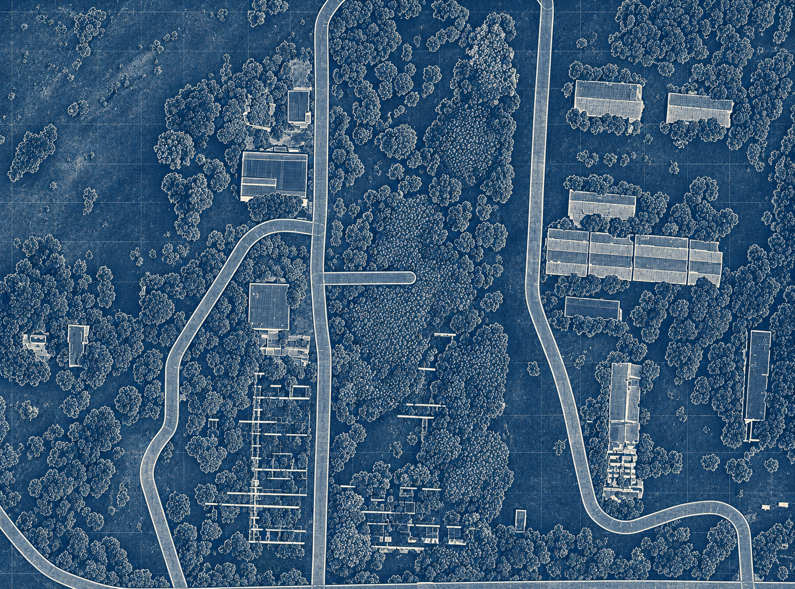
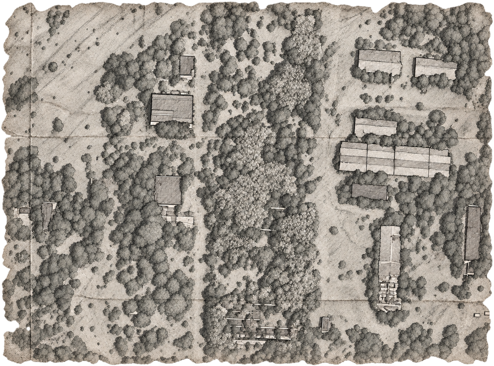

Файл повреждён


100%
Изображение карты не загрузилось.
Обнови страницу, чтобы повторить загрузку.
Обнови страницу, чтобы повторить загрузку.
Забытая
история
Что видел. Что слышал.
Что лучше забыть.